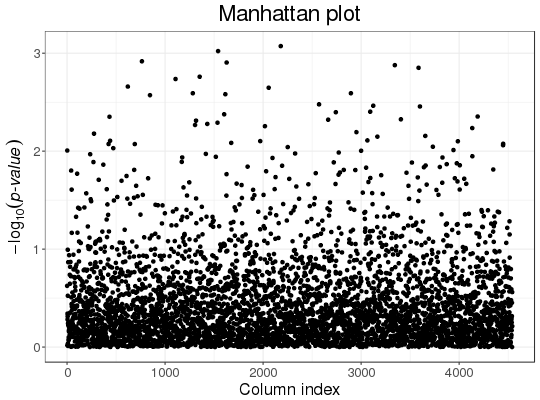
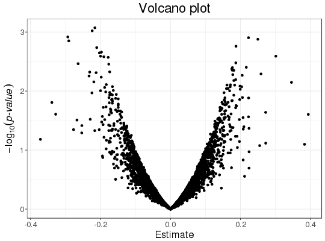

Slopes of column-wise linear regressions of each column
of a big.matrix, with some other associated statistics.
Covariates can be added to correct for confounders.
big_univLinReg(X., y.train, ind.train = rows_along(X.), ind.col = cols_along(X.), covar.train = NULL, ncores2 = 1, thr.eigval = 1e-04)
ind.train.ind.train.
Default is NULL and corresponds to only adding an intercept to each model.1e-4.A data.frame with 4 elements:
X.desc <- big_attachExtdata() n <- nrow(X.desc) y <- rnorm(n) covar <- matrix(rnorm(n * 3), n) X1 <- attach.BM(X.desc)[, 1] # only first column of the `big.matrix` # Without covar test <- big_univLinReg(X.desc, y) ## new class `mhtest` class(test)#> [1] "mhtest" "data.frame"attr(test, "transfo")#> function (x) .Primitive("abs")attr(test, "predict")#> function(xtr) 2 * stats::pt(xtr, df = 515, lower.tail = FALSE) #> <environment: 0x13df76d8>## plot results plot(test)plot(test, type = "Volcano")## To get p-values associated with the test test$p.value <- predict(test) str(test)#> Classes ‘mhtest’ and 'data.frame': 4542 obs. of 4 variables: #> $ estim : num -0.15441 0.13276 0.0112 -0.02681 0.00845 ... #> $ std.err: num 0.061 0.073 0.0665 0.0747 0.0579 ... #> $ score : num -2.53 1.819 0.169 -0.359 0.146 ... #> $ p.value: num 0.0117 0.0694 0.8662 0.72 0.884 ... #> - attr(*, "transfo")=function (x) #> - attr(*, "predict")=function (xtr) #> ..- attr(*, "srcref")=Class 'srcref' atomic [1:8] 1 1 1 62 1 62 1 1 #> .. .. ..- attr(*, "srcfile")=Classes 'srcfilecopy', 'srcfile' <environment: 0x1a67db48>summary(lm(y ~ X1))$coefficients[2, ]#> Estimate Std. Error t value Pr(>|t|) #> -0.15440627 0.06103467 -2.52981266 0.01170941# With all data str(big_univLinReg(X.desc, y, covar = covar))#> Classes ‘mhtest’ and 'data.frame': 4542 obs. of 3 variables: #> $ estim : num -0.15837 0.13903 0.00528 -0.02346 0.01106 ... #> $ std.err: num 0.0614 0.0731 0.0667 0.0748 0.058 ... #> $ score : num -2.5794 1.9016 0.0793 -0.3135 0.1907 ... #> - attr(*, "transfo")=function (x) #> - attr(*, "predict")=function (xtr) #> ..- attr(*, "srcref")=Class 'srcref' atomic [1:8] 1 1 1 62 1 62 1 1 #> .. .. ..- attr(*, "srcfile")=Classes 'srcfilecopy', 'srcfile' <environment: 0x14063c90>summary(lm(y ~ X1 + covar))$coefficients[2, ]#> Estimate Std. Error t value Pr(>|t|) #> -0.15836684 0.06139563 -2.57944820 0.01017359# With only half of the data ind.train <- sort(sample(n, n/2)) str(big_univLinReg(X.desc, y[ind.train], covar.train = covar[ind.train, ], ind.train = ind.train))#> Classes ‘mhtest’ and 'data.frame': 4542 obs. of 3 variables: #> $ estim : num -0.17166 0.16618 -0.06582 -0.08267 0.00468 ... #> $ std.err: num 0.086 0.1056 0.0974 0.106 0.0814 ... #> $ score : num -1.9968 1.5739 -0.6761 -0.7802 0.0575 ... #> - attr(*, "transfo")=function (x) #> - attr(*, "predict")=function (xtr) #> ..- attr(*, "srcref")=Class 'srcref' atomic [1:8] 1 1 1 62 1 62 1 1 #> .. .. ..- attr(*, "srcfile")=Classes 'srcfilecopy', 'srcfile' <environment: 0xba4e040>summary(lm(y ~ X1 + covar, subset = ind.train))$coefficients[2, ]#> Estimate Std. Error t value Pr(>|t|) #> -0.17165550 0.08596534 -1.99679890 0.04691838